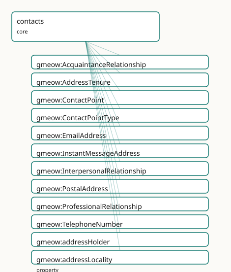

GMEOW Contacts Module
- IRI: https://blackcatinformatics.ca/gmeow/slices/contacts
- Tier: core
Group: core
What This Slice Covers
This slice owns 39 terms and contributes 53 mapping or projection rows. Use it when its terms match the native fact you want to preserve; use the linkage tables to see how those facts leave GMEOW for consumer vocabularies.
Dependencies
gmeow:slices/accountsgmeow:slices/agreementsgmeow:slices/kernelgmeow:slices/observationsgmeow:slices/placesgmeow:slices/temporal
Consumers
- The mail corpus's address book; email-address structure (core half of the email split).
Local Map

Examples
Contact Points
- Source:
slices/core/contacts/examples/contact-points.ttl - GMEOW terms:
gmeow:ContactPoint,gmeow:EmailAddress,gmeow:Organization,gmeow:Person,gmeow:PostalAddress,gmeow:addressLocality,gmeow:addressPlace,gmeow:addressRegion,gmeow:addressValue,gmeow:contactPointProvider
# SPDX-FileCopyrightText: 2026 Blackcat Informatics® Inc. <paudley@blackcatinformatics.ca>
# SPDX-License-Identifier: CC-BY-4.0
#
# Worked example: contact details are flat-first, reified on demand (, P4).
# A bare gmeow:email / gmeow:telephone on the agent covers the common case. When
# a contact point carries a TYPE (work vs personal), a PROVIDER, structured parts
# or a postal frame, it is promoted to a reified gmeow:ContactPoint reached via
# gmeow:hasContactPoint. A gmeow:PostalAddress is expressed in an explicit postal/
# administrative REFERENCE FRAME (P11): its street/locality/region components are
# coordinate values along that frame's axes — the as-written surface form, kept
# distinct from the resolved geographic Place (gmeow:addressPlace).
@prefix gmeow: <https://blackcatinformatics.ca/gmeow/> .
@prefix ex: <https://blackcatinformatics.ca/gmeow/examples/contacts/> .
ex:acme a gmeow:Organization ; gmeow:name "Acme Robotics Inc."@en .
ex:dana a gmeow:Person ;
gmeow:name "Dana Reyes"@en ;
gmeow:email "dana@example.org" ; # flat shortcut — the common case
gmeow:telephone "+1-555-0142" ; # flat shortcut
gmeow:hasContactPoint ex:workEmail , ex:homeAddress .
# --- Reified email: typed, provider-scoped, and split into its parts.
ex:workEmail a gmeow:EmailAddress ;
gmeow:addressValue "dana@acme.example" ;
gmeow:localPart "dana" ;
gmeow:domainPart "acme.example" ;
gmeow:contactPointType gmeow:contactPointTypeWork ;
gmeow:contactPointProvider ex:acme .
# --- Reified postal address: components are coordinates in the postal frame (P11).
ex:homeAddress a gmeow:PostalAddress ;
gmeow:contactPointType gmeow:contactPointTypePersonal ;
gmeow:postalAddressFrame gmeow:referenceFramePostalAddress ;
gmeow:streetAddress "742 Evergreen Terrace" ;
gmeow:addressLocality "Springfield" ;
gmeow:addressRegion "Oregon" ;
gmeow:postalCode "97403" ;
gmeow:countryCode "US" .
Terms
Classes
| Term | Label | Definition |
|---|---|---|
gmeow:AcquaintanceRelationship |
Acquaintance Relationship | An interpersonal relationship of social acquaintance — agents who have met and know one another (the reified form of hasMet). |
gmeow:AddressTenure |
Address Tenure | The reified, time-scoped fact that an agent held a contact point (e.g. an email address) over a particular interval. |
gmeow:ContactPoint |
Contact Point | A means of reaching an agent: an email address, telephone number, or postal address. |
gmeow:ContactPointType |
Contact Point Type | The usage role of a contact point — a VALUE vocabulary (individuals, never subclasses). Personal, work, personal-domain, support, billing, and emergency are ex... |
gmeow:EmailAddress |
Email Address | A contact point reachable via the Simple Mail Transfer Protocol (SMTP). |
gmeow:InterpersonalRelationship |
Interpersonal Relationship | A reified standing relationship between agents (acquaintance, collaboration, …), able to bear its own time interval, confidence, and source evidence. |
gmeow:PostalAddress |
Postal Address | A contact point reachable by physical mail at a postal address. It is expressed in the postal/administrative topological reference frame (gmeow:referenceFrameP... |
gmeow:ProfessionalRelationship |
Professional Relationship | An interpersonal relationship arising from work — colleagues, collaborators, a client and a provider (the reified form of hasWorkedWith). |
gmeow:TelephoneNumber |
Telephone Number | A contact point reachable by telephone. |
Properties
| Term | Label | Definition |
|---|---|---|
gmeow:addressHolder |
address holder | The agent who held the contact point over the tenure's interval. |
gmeow:addressLocality |
address locality | The locality (city or town) coordinate value of a postal address, expressed along the gmeow:axisAddressLocality axis of the postal reference frame. |
gmeow:addressPlace |
address place | The geographic place a postal address denotes (typically the premises/building) — the seam from the as-written address to the resolved place hierarchy, its coo... |
gmeow:addressRegion |
address region | The region (state, province, or territory) coordinate value of a postal address, expressed along the gmeow:axisAddressRegion axis of the postal reference frame. |
gmeow:addressValue |
address value | The normalized addr-spec of an email address. |
gmeow:contactPointProvider |
contact point provider | The agent (typically an organization) that issues or scopes a contact point — the employer behind a work address, the provider behind an email's domain. Range... |
gmeow:contactPointType |
contact point type | The usage role(s) of a contact point — one or more gmeow:ContactPointType values (personal, work, …). Non-functional: a contact point may serve several roles,... |
gmeow:countryCode |
country code | The country code coordinate value of a postal address, expressed along the gmeow:axisCountryCode axis of the postal reference frame. The intended value is an I... |
gmeow:deliversToAccount |
delivers to account | Relates an email address to the online account it delivers to — the seam joining an address (held by an agent) to the account a message resides in. |
gmeow:domainPart |
domain part | The domain part of an email address. |
gmeow:email |
An email address at which an agent can be reached. | |
gmeow:extendedAddress |
extended address | The extended-address coordinate value of a postal address, expressed along the gmeow:axisExtendedAddress axis of the postal reference frame. |
gmeow:hasAgreement |
has agreement | Relates an agent to an agreement it is party to. The party-ship period is carried with gmeow:validFrom/validUntil on this statement; the agreement's own term/e... |
gmeow:hasContactPoint |
has contact point | Relates an agent to a means of contacting it. |
gmeow:hasMet |
has met | Records that two agents have met; symmetric. The occasion/period is carried with gmeow:validFrom/validUntil on the statement. |
gmeow:hasUsed |
has used | Records that an agent has used some entity (a tool, service, or work). The period is carried with gmeow:validFrom/validUntil on the statement. |
gmeow:hasWorkedWith |
has worked with | Records that two agents have worked together; symmetric. The period is carried with gmeow:validFrom/validUntil on the statement, or reified as a gmeow:Professi... |
gmeow:localPart |
local part | The local part of an email address. |
gmeow:postOfficeBox |
post office box | The post-office-box coordinate value of a postal address, expressed along the gmeow:axisPostOfficeBox axis of the postal reference frame. |
gmeow:postalAddressFrame |
postal address frame | The postal/administrative reference frame in which this address is expressed. Functional: an address is expressed in exactly one frame. The default is gmeow:re... |
gmeow:postalCode |
postal code | The postal/ZIP code coordinate value of a postal address, expressed along the gmeow:axisPostalCode axis of the postal reference frame. |
gmeow:relationshipInterval |
relationship interval | The time interval over which an interpersonal relationship held. (A relator carries its period this way rather than via duringInterval, which is reserved for g... |
gmeow:relationshipParty |
relationship party | An agent who is one of the parties to an interpersonal relationship. Non-functional: a relationship typically binds two parties (and is left open for group tie... |
gmeow:streetAddress |
street address | The street-address coordinate value of a postal address, expressed along the gmeow:axisStreetAddress axis of the postal reference frame. |
gmeow:telephone |
telephone | A telephone number at which an agent can be reached. |
gmeow:tenuredContactPoint |
tenured contact point | The contact point an address-tenure concerns. |
Individuals
| Term | Label | Definition |
|---|---|---|
gmeow:contactPointTypePersonal |
personal | A personal contact point. |
gmeow:contactPointTypePersonalDomain |
personal domain | A contact point on a person's own domain (e.g. an email at one's personal domain). |
gmeow:contactPointTypeSupport |
support | A customer-support or help contact point. |
gmeow:contactPointTypeWork |
work | A work or professional contact point. |
Linkages
- Rows: 53
- Projection profiles:
foaf,schema-org,sioc,vcard - External vocabularies:
foaf,rdf,rel,schema,sioc,vcard,wd
| Source | Kind | Profile | Predicate/Relation | Target | Evidence |
|---|---|---|---|---|---|
gmeow:ContactPoint |
equivalence | - |
owl:equivalentClass | schema:ContactPoint | gmeow-classes.sssom.tsv; gmeow:eqClasses040; confidence 1 |
gmeow:EmailAddress |
equivalence | - |
skos:closeMatch | wd:Q29934200 | gmeow-wikidata.sssom.tsv; gmeow:eqWikidata044; confidence 0.85 |
gmeow:InterpersonalRelationship |
equivalence | - |
skos:closeMatch | foaf:knows | gmeow-trust.sssom.tsv; gmeow:eqTrust012; confidence 0.5 |
gmeow:PostalAddress |
equivalence | - |
owl:equivalentClass | schema:PostalAddress | gmeow-classes.sssom.tsv; gmeow:eqClasses041; confidence 1 |
gmeow:PostalAddress |
equivalence | - |
skos:closeMatch | vcard:Address | gmeow-classes.sssom.tsv; gmeow:eqClasses042; confidence 0.9 |
gmeow:TelephoneNumber |
equivalence | - |
skos:closeMatch | wd:Q214291 | gmeow-wikidata.sssom.tsv; gmeow:eqWikidata043; confidence 0.85 |
gmeow:addressLocality |
equivalence | - |
owl:equivalentProperty | schema:addressLocality | gmeow-places.sssom.tsv; gmeow:eqPlaces033; confidence 1 |
gmeow:addressLocality |
equivalence | - |
skos:closeMatch | vcard:locality | gmeow-places.sssom.tsv; gmeow:eqPlaces034; confidence 0.9 |
gmeow:addressPlace |
equivalence | - |
skos:closeMatch | schema:address | gmeow-places.sssom.tsv; gmeow:eqPlaces041; confidence 0.7 |
gmeow:addressRegion |
equivalence | - |
owl:equivalentProperty | schema:addressRegion | gmeow-places.sssom.tsv; gmeow:eqPlaces035; confidence 1 |
gmeow:addressRegion |
equivalence | - |
skos:closeMatch | vcard:region | gmeow-places.sssom.tsv; gmeow:eqPlaces036; confidence 0.9 |
gmeow:countryCode |
equivalence | - |
skos:closeMatch | schema:addressCountry | gmeow-places.sssom.tsv; gmeow:eqPlaces039; confidence 0.8 |
gmeow:countryCode |
equivalence | - |
skos:closeMatch | vcard:country-name | gmeow-places.sssom.tsv; gmeow:eqPlaces040; confidence 0.7 |
gmeow:email |
equivalence | - |
skos:closeMatch | foaf:mbox | gmeow-properties.sssom.tsv; gmeow:eqProperties005; confidence 0.9 |
gmeow:email |
equivalence | - |
owl:equivalentProperty | schema:email | gmeow-properties.sssom.tsv; gmeow:eqProperties004; confidence 1 |
gmeow:email |
equivalence | - |
skos:closeMatch | vcard:hasEmail | gmeow-properties.sssom.tsv; gmeow:eqProperties006; confidence 0.9 |
gmeow:extendedAddress |
equivalence | - |
skos:closeMatch | vcard:extended-address | gmeow-places.sssom.tsv; gmeow:eqPlaces030; confidence 0.9 |
gmeow:hasContactPoint |
equivalence | - |
owl:equivalentProperty | schema:contactPoint | gmeow-properties.sssom.tsv; gmeow:eqProperties009; confidence 0.9 |
gmeow:hasMet |
equivalence | - |
skos:closeMatch | foaf:knows | gmeow-trust.sssom.tsv; gmeow:eqTrust009; confidence 0.6 |
gmeow:hasMet |
equivalence | - |
skos:closeMatch | rel:hasMet | gmeow-trust.sssom.tsv; gmeow:eqTrust008; confidence 0.95 |
gmeow:hasWorkedWith |
equivalence | - |
skos:closeMatch | rel:collaboratesWith | gmeow-trust.sssom.tsv; gmeow:eqTrust010; confidence 0.85 |
gmeow:hasWorkedWith |
equivalence | - |
skos:closeMatch | rel:worksWith | gmeow-trust.sssom.tsv; gmeow:eqTrust011; confidence 0.85 |
gmeow:postOfficeBox |
equivalence | - |
skos:closeMatch | schema:postOfficeBoxNumber | gmeow-places.sssom.tsv; gmeow:eqPlaces031; confidence 0.9 |
gmeow:postOfficeBox |
equivalence | - |
skos:closeMatch | vcard:post-office-box | gmeow-places.sssom.tsv; gmeow:eqPlaces032; confidence 0.9 |
| ... | ... | ... | ... | ... | 29 more rows |
Guide
Contacts — channels, addresses, and ties that carry their own time
Slice:
https://blackcatinformatics.ca/gmeow/slices/contacts· tier: core Contact points (email, telephone, postal), temporally-scoped contact relationships, and the reified interpersonal-relationship relator — the schema.org / vCard / REL superset.
An address book flattens three different things into rows: channels (an email address, a
phone number), tenure (who held that address, when — people acquire and relinquish
addresses), and ties (who knows whom, in what capacity, over what period). GMEOW models
each honestly. Channels are first-class ContactPoint objects; tenure and ties follow the
flat-first, reify-on-demand pattern — flat shortcuts carry their period at the statement
level with the temporal slice's validFrom/validUntil clocks (Principles 2–3), and
promote to a relator (InterpersonalRelationship, AddressTenure) when the fact itself
needs identity, evidence, or confidence. A postal address, meanwhile, is frame-relative
(Principle 11): its components are coordinate values along the axes of the postal reference
frame — the as-written surface form — kept apart from the resolved, identifier-bearing
place hierarchy it denotes.
This slice is the superset layer over schema.org ContactPoint/PostalAddress, vCard, and
the REL vocabulary (Principle 5: model it correctly, bridge by reference); identity trust
between contacts (keys, certifications, owner-trust) lives in the cross-cutting trust
module, and the email message model lives in the email extension — this slice is the
contact half of the email split.
Channels
gmeow:ContactPoint
A means of reaching an agent, attached via hasContactPoint. Three subkinds:
EmailAddress, TelephoneNumber, PostalAddress. The flat gmeow:email /
gmeow:telephone literals remain for the 80 % case where the channel needs no structure —
flat-first, never the only form.
gmeow:EmailAddress
The structured channel: addressValue (the normalized addr-spec), localPart,
domainPart — all functional. deliversToAccount is the seam to the accounts slice: an
address is held by an agent; the account it delivers to is where messages reside. The
mail corpus's address book is this slice's named consumer (Principle 15). Envelope display
names and internationalized addresses are tracked by and land here.
gmeow:PostalAddress
An address expressed in a reference frame (postalAddressFrame, functional — exactly
one frame, default referenceFramePostalAddress). Its components — streetAddress,
extendedAddress, postOfficeBox, addressLocality, addressRegion, postalCode,
countryCode — are coordinate values along that frame's axes: the as-written form, all
non-functional because multi-source values conflict and must coexist ("CA" / "Canada" /
"CAN" are three records, not one truth).
gmeow:addressPlace
The seam from surface form to geography: the gmeow:Place an address denotes (typically
the premises), from which containedInPlace* climbs the resolved, QID-bearing place
hierarchy with its coordinates, geometry, and external identifiers. Geocoding — turning the
written form into that place — is solver work, never an asserted equivalence
(Principle 12).
Tenure
gmeow:AddressTenure
The reified, time-scoped fact that an agent held a contact point over an interval — a
TimeScopedRelation with functional tenuredContactPoint and addressHolder. Use it when
the holding itself needs identity (a shared mailbox's succession of owners, an address
recycled across people — the mail corpus's hard cases); otherwise annotate
hasContactPoint with the statement clocks.
Ties
gmeow:hasMet · gmeow:hasWorkedWith · gmeow:hasUsed · gmeow:hasAgreement
The flat shortcuts (the REL-superset layer). hasMet/hasWorkedWith are symmetric
agent-agent records; hasUsed reaches any entity; hasAgreement joins an agent to an
agreement it is party to — the party-ship period rides this statement, while the
agreement's own term lives on the Agreement (no double-modelling). All carry their period
with validFrom/validUntil on the statement, exactly as the gmeow store keeps
valid_from/valid_until per claim.
gmeow:InterpersonalRelationship
The promoted form: a standing tie as a gufo:Relator (mediating and existentially
depending on its players — the same idiom as genealogy's KinRelationship and names'
NameUsage), for when the tie must bear its own interval, confidence, or evidence.
Subkinds ProfessionalRelationship (reified hasWorkedWith) and
AcquaintanceRelationship (reified hasMet).
gmeow:relationshipParty · gmeow:relationshipInterval
relationshipParty is non-functional — typically two parties, deliberately open for group
ties; the EL mediation axiom makes "a relationship mediates at least one agent"
a reasoner-visible fact, while the closed-world "exactly two" is SHACL's job.
relationshipInterval carries the tie's period as a first-class TimeInterval (relators
carry intervals this way; duringInterval is reserved for situation-based time-scoped
relations).
ex:tie a gmeow:ProfessionalRelationship ;
gmeow:relationshipParty ex:ada , ex:grace ;
gmeow:relationshipInterval ex:i1998to2004 ;
gmeow:confidence 0.9 . # the promoted form earns evidence
Solver and alignment notes
Address normalization, geocoding, and frame conversion are computations outside the logic
(Principle 12): the slice stores the as-written coordinates and the denoted place; nothing
asserts that two written variants "are" the same address. Projections downcast to
vcard:ADR / schema:PostalAddress (flat strings reassembled from the coordinate values)
and the flat ties to the REL vocabulary; the frame indirection and the statement clocks are
canonical and survive only here (Principle 4).
Dependencies
Depends on kernel, temporal (clocks, intervals, TimeScopedRelation), places
(addressPlace and the place hierarchy), accounts (deliversToAccount), agreements,
and observations. Consumed by the mail corpus's address book and the email extension.
Contact-point usage
gmeow:ContactPointType · gmeow:contactPointType · gmeow:contactPointProvider
The usage role of a contact point — personal, work, personal-domain, support — is an
open value vocabulary (gmeow:ContactPointType, P9), bound by
gmeow:contactPointType (non-functional: a point may serve several roles).
gmeow:contactPointProvider (range gmeow:Agent, to avoid a contacts→organization
dependency) is the issuing/scoping agent — the employer behind a work address, the
provider behind an email's domain. A retired contact point keeps gmeow:validUntil in
the past (P10), never deletion. Projects to schema:contactType and the vCard TYPE
parameter.